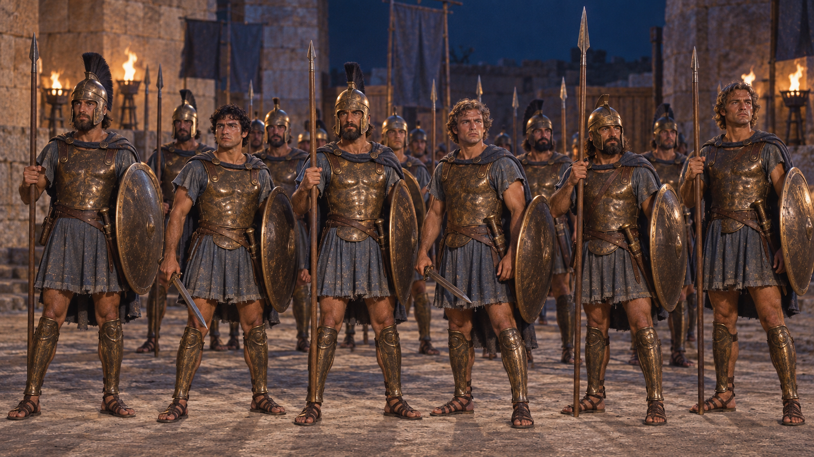
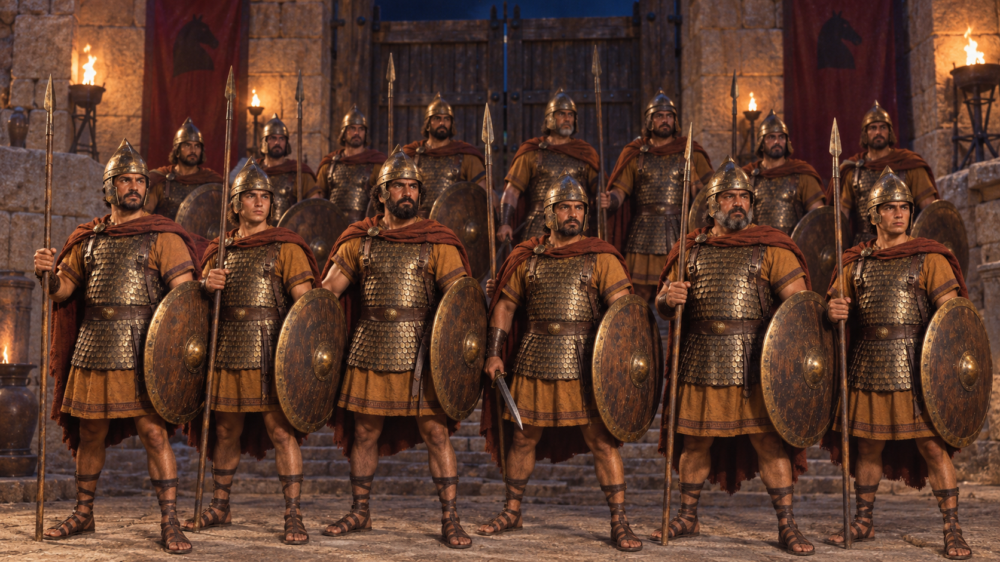

MSR V2 视频测试 · 100 秒完整成片与逐镜预览
西农骗开入城通路；夜里伏兵与守军交锋，在掩护下解闩开门。阿伽门农率大军突入，门洞与广场爆发两军战斗。
沿用既定人物与场景资产，跳过阿喀琉斯。无对白、无配乐，以环境声和动作讲述。本页保留静态分镜；100 秒测试视频已生成，可从上方入口播放。


点击图片查看原尺寸。镜头卡保留人物、动作起止、摄影和装备状态；S17 是插入解闩和开门之间的城外军阵反打；S19/S20 展示大军交锋。